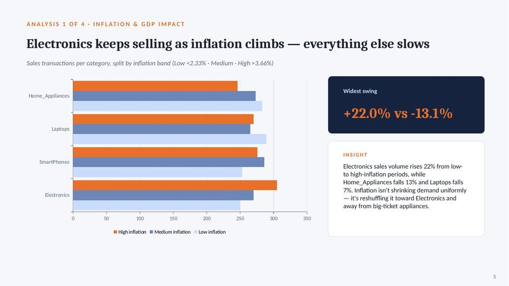
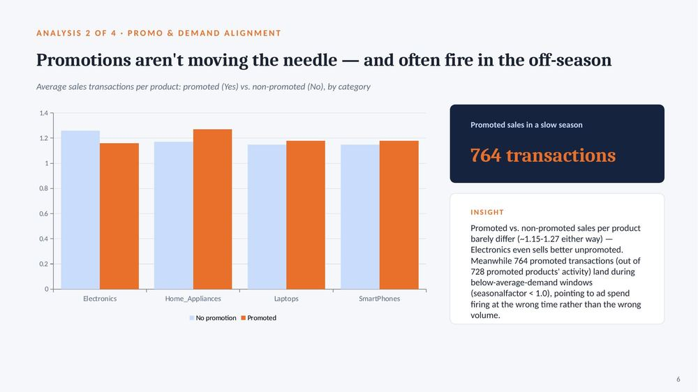
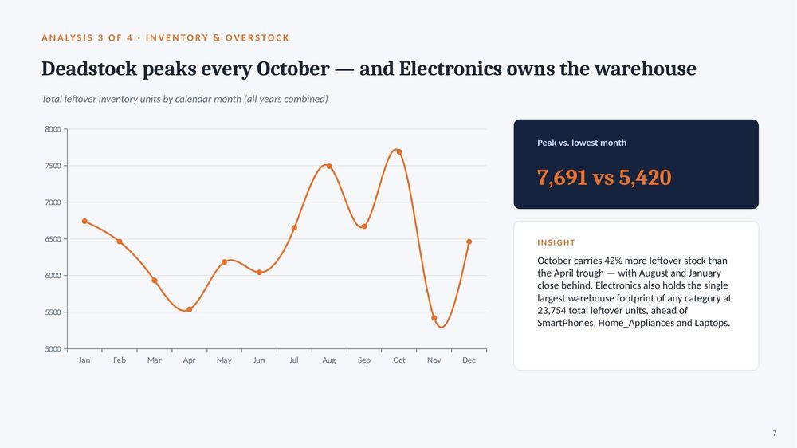
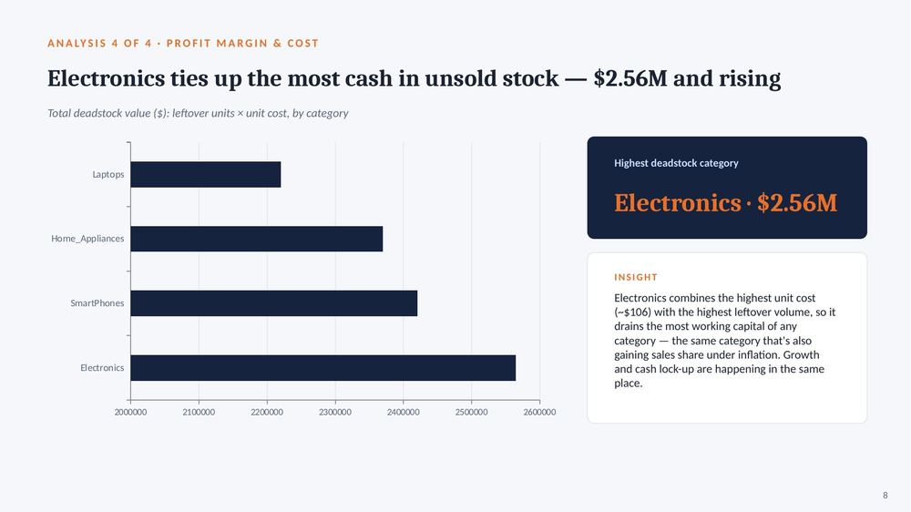

A supply chain built to react to macroeconomic swings
Nexus Retail Group is a consumer-electronics retailer founded in 2018 in Ontario, Canada, selling smartphones, laptops and general electronics to tech-savvy urban consumers and corporate buyers. It operates direct-to-consumer, omni-channel, across North America with 250+ employees — a market challenger positioning itself against players like Slot Nigeria and Jumia.
Volatile sales and eroding margins during high inflation
Left unaddressed, this leads to costly overstocking of premium tech items and missed revenue during downturns — hitting supply chain operations, warehousing cost, and overall profitability.
Macroeconomic volatility
Unstable inflation peaks and unpredictable regional GDP growth.
Promotional misalignment
Marketing spend disconnected from seasonal demand patterns.
Inventory stagnation
Rigid safety-stock limits locking up capital in slow-moving stock.
From three raw tables to four decision-ready answers
Three tables — sales, product, factors — 1,500 rows each, joined on productid and salesdate. Retrieve historical transactions, inventory and macro data → join and filter → aggregate by category, month and economic band → interpret against inflation, GDP and seasonal splits.
Electronics keeps selling as inflation climbs — everything else slows
Sales transactions per category, split by inflation band (Low <2.33% · Medium · High >3.66%)

Electronics sales volume rises 22% from low- to high-inflation periods, while Home_Appliances falls 13% and Laptops falls 7%. Inflation isn't shrinking demand uniformly — it's reshuffling it toward Electronics and away from big-ticket appliances.
Promotions aren't moving the needle — and often fire in the off-season
Average sales transactions per product: promoted (Yes) vs. non-promoted (No), by category

Promoted vs. non-promoted sales per product barely differ (~1.15–1.27 either way) — Electronics even sells better unpromoted. Meanwhile 764 promoted transactions land during below-average-demand windows (seasonalfactor < 1.0), pointing to ad spend firing at the wrong time rather than the wrong volume.
Deadstock peaks every October — and Electronics owns the warehouse
Total leftover inventory units by calendar month (all years combined)

October carries 42% more leftover stock than the April trough — with August and January close behind. Electronics also holds the single largest warehouse footprint of any category at 23,754 total leftover units, ahead of SmartPhones, Home_Appliances and Laptops.
Electronics ties up the most cash in unsold stock — $2.56M and rising
Total deadstock value ($): leftover units × unit cost, by category

Electronics combines the highest unit cost (~$106) with the highest leftover volume, so it drains the most working capital of any category — the same category that's also gaining sales share under inflation. Growth and cash lock-up are happening in the same place.
Four moves to protect margin through the next inflation cycle
Rebalance safety stock by category
Loosen buffer limits for Electronics (rising demand under inflation); tighten for Home_Appliances & Laptops (demand falls as inflation rises).
Re-time promotions to seasonal factor
Shift ad spend away from below-average-demand windows — roughly a third of promoted sales are currently landing there for no measurable lift.
Pre-empt the Oct/Aug/Jan deadstock peaks
Trigger clearance pricing and reduced reorder points 4–6 weeks ahead of these recurring high-inventory months.
Stop promoting self-sustaining categories
SmartPhones and Electronics already lead in non-promoted sales — reallocate that budget toward inventory drawdown instead.
Query script
Full commented PostgreSQL script covering all four analysis groups — inflation/GDP banding, promo ROI, seasonal timing, slow-moving stock, deadstock value.
-- 1.1 PRODUCT PERFORMANCE: sales volume by inflation band
SELECT
p.productcategory,
COUNT(*) FILTER (WHERE f.inflationrate < 2.33) AS low_inflation_sales,
COUNT(*) FILTER (WHERE f.inflationrate BETWEEN 2.33 AND 3.66) AS medium_inflation_sales,
COUNT(*) FILTER (WHERE f.inflationrate > 3.66) AS high_inflation_sales
FROM sales s
JOIN product p ON p.productid = s.productid
JOIN factors f ON f.salesdate = s.salesdate
GROUP BY p.productcategory
ORDER BY pct_change_low_to_high_inflation ASC;
Let's talk data
Open to opportunities and conversations around data analytics.